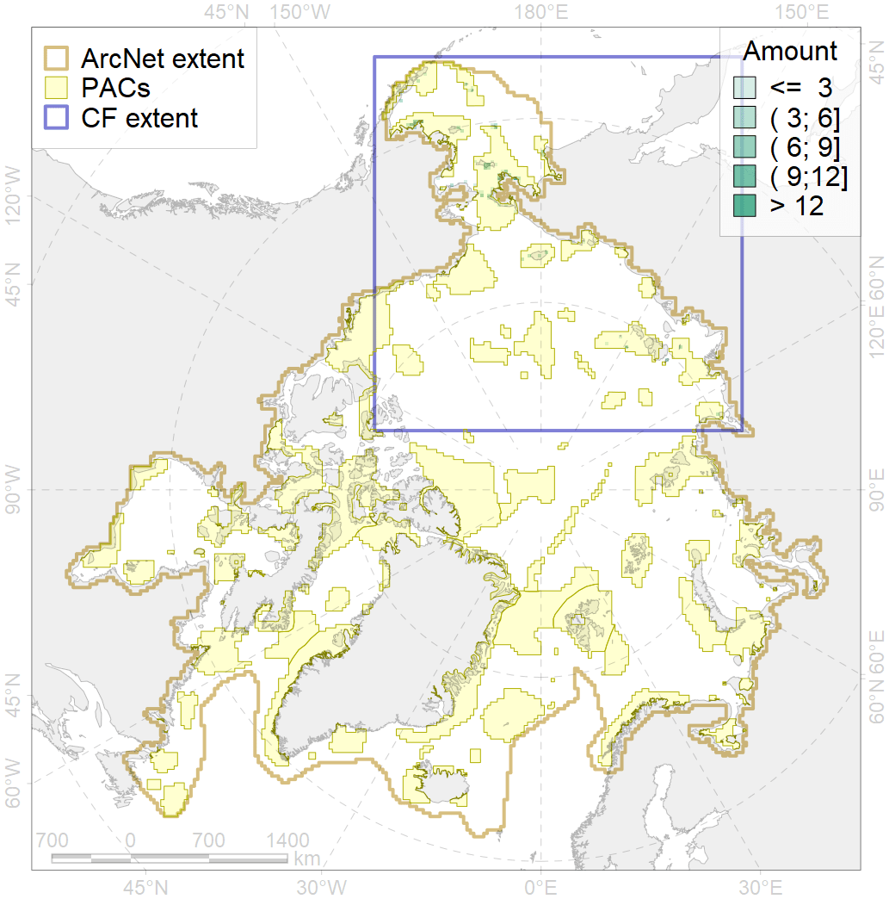
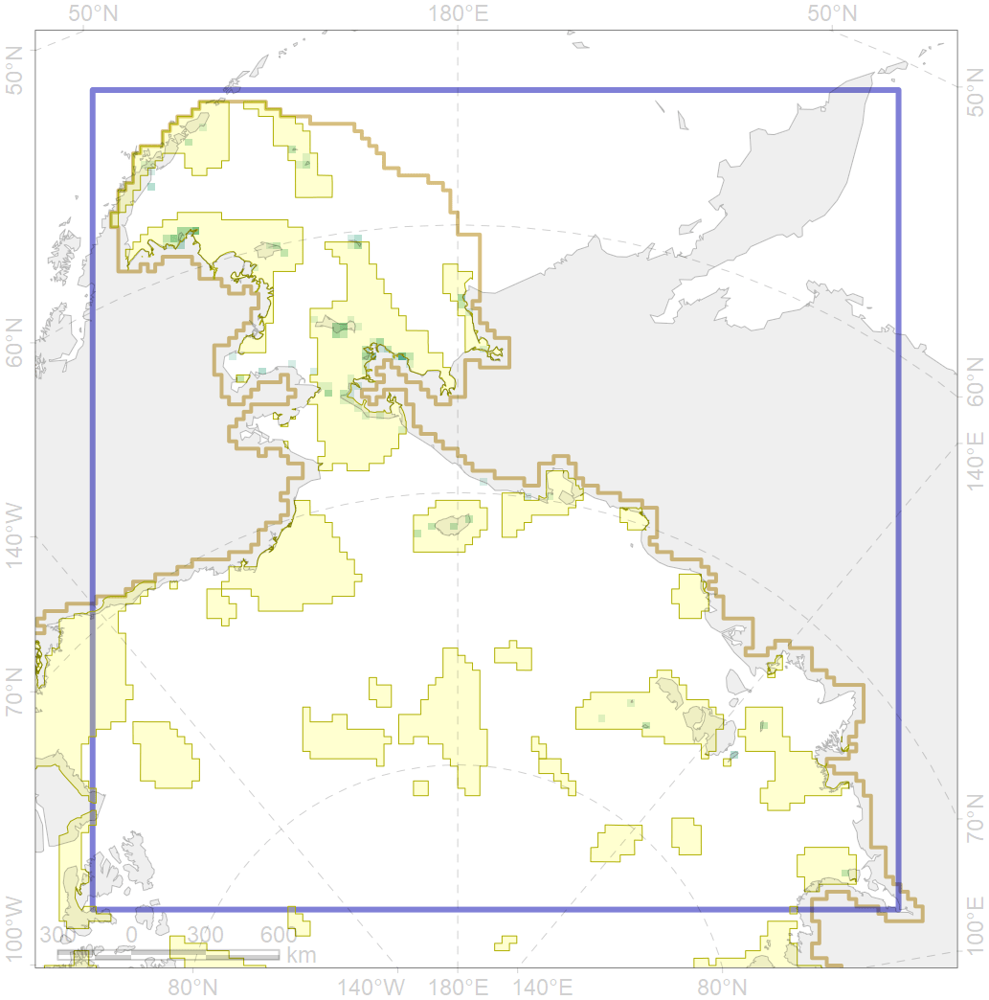

6048

| CF code | 6048 |
| CF name | Black-legged kittiwake (Rissa tridactyla pollicarius) breeding colonies |
| Time Period | 1950-2010 |
| Source(s) | Circumpolar Seabird Data Portal http://axiom.seabirds.net/maps/js/seabirds.php?app=circumpolar#z=2&ll=NaN,0.00000, Garðarsson et al 2013, Bakken et al 2000, Gerasimova 1962, Krasnov & Ezhov 2013, Melnikov et al 2012, Frantzen et al 1993, Oien 2004, Tomkovich 1984, Gavrilo et al 1993, Vuilleumier 1995, Strom et al 1997, Uspenski 1956, Kalyakin 1993, Kalyakin 2001, Strom et al 1995, Pokrovskaya & Tertitski 1993, Boertmann et al 1996 |
| Seasonality | May-September |
| Depth Horizon | ≥0 m |
| Methodology | Field Data |
| Use Restrictions | Open source |
| Author Name | Gavrilo, Tertitski |
| Notes | |
| Scenario’s Target | 0.648 |
| Target Achievement | 0.892 (Scenario: 137.7%) |
| PAC | Share of the Total Amount within the PAC | Share of the Target Achievement for the ArcNet | PAC’s Contribution to the Target Achievement |
|---|---|---|---|
| 1 | 2.1% | 3.3% | 2.4% |
| 2 | 3.6%3.6% | 5.6%5.6% | 4.0%4.1% |
| 3 | 20.1%24.1% | 29.4%35.5% | 21.4%25.8% |
| 4 | 3.7%4.5% | 5.3%6.6% | 3.9%4.8% |
| 5 | 35.5%44.0% | 54.4%67.3% | 39.5%48.9% |
| 7 | 4.8% | 7.4% | 5.4% |
| 8 | 0.9%0.9% | 1.4%1.4% | 1.0%1.0% |
| 11 | 3.0% | 4.6% | 3.4% |
| 12 | 1.2% | 1.8% | 1.3% |
| 13 | 1.2% | 1.9% | 1.4% |
| inner | 76.2%89.5% | 115.1%135.4% | 83.6%98.4% |
| outer | 23.8%52.7% | 22.5%65.0% | 16.4%47.2% |
| † supplement values are for area consistence whereas principal values are for Accenter compatible gridded stats |